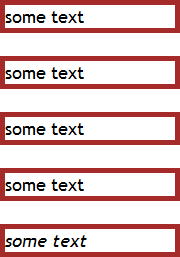

RN8004: 各浏览器对于 CSS 代码中的表意空格的处理存在差异
标准参考
根据 CSS2.1 规范中的描述，在 CSS 语法定义中包含标记 (Token) "S" 的语法代表空白 (white space)，这些空白字符包括 "空格" (U+0020), "制表符" (U+0009), "换行" (U+000A), "回车" (U+000D), 及 "换页" (U+000C)。其他看似空白的字符，例如 "em-space" (U+2003) 及 "ideographic space" (U+3000，表意空格) 不是空白的一部分。
关于 CSS 语法中的空白 的更多资料，请参考 CSS2.1 规范 4.1.1 Tokenization 中的内容。
关于 U+3000 IDEOGRAPHIC SPACE 及 全角（Full-width）字符 的更多资料，请参考 Unicode 5.2.0 标准 Chapter 6 Writing Systems and Punctuation、CJK Symbols and Punctuation 及 UAX #11 EAST ASIAN WIDTH 中的内容。
问题描述
若 CSS 代码中出现了表意空格 (U+3000)，如被当作了普通空白字符使用，则各浏览器的处理存在差异。
造成的影响
此问题会导致 CSS 特性的值在某些浏览器中为不合法值而被舍弃，从而造成页面布局差异。
受影响的浏览器
| 所有浏览器 |
|---|
问题分析
字符“ ”，即表意空格（Ideographic Space），也可以叫全角空格（Full-width Space），对应的 HTML 实体字符为“　”。在相同的等宽中文字体下，全角空格的宽度与普通汉字的宽度相等。
关于“空格”的更多信息，请参考 http://zh.wikipedia.org/zh-cn/空格。
分析以下代码：fullwidth_space_css.html
<!DOCTYPE html>
<html>
<head>
<style>
body { font:18px 'Trebuchet MS'; }
.container { width:180px; }
</style>
</head>
<body>
<div class="container">
<div style="padding:10px 20px 30px 40px; border:5px solid brown; background:plum;">
<div style="background:white;">some text</div>
</div>
<br />
<div style="font-size: 32px; background-image:url( google.gif ); border:5px solid brown;">some text</div>
<br />
<div style="font-size :32px; background:coral ; border:5px solid brown;">some text</div>
<br />
<div style="background-color:rgb(204, 204, 51); border:5px solid brown;">some text</div>
<br />
<div style="font-style:italic; background-color:wheat; border:5px solid brown;">some text</div>
</div>
</body>
</html>
上述代码中在 CSS 代码中原本应该为空白符号的地方使用了表意空格。
在各浏览器中运行效果如下：
| IE6 IE7 IE8(Q) | IE8(S) | Firefox Chrome Safari | Opera |
|---|---|---|---|
 |
 |
 |  |
根据上面截图整理下表：
| IE6 IE7 IE8(Q) | IE8(S) | Firefox Chrome Safari | Opera | |
|---|---|---|---|---|
| 普通值 (value) 中的表意空格 | 合法 | 合法 | 不合法 | 不合法 |
| 特性名 (property) 后的表意空格 | 不合法 | 不合法 | 不合法 | 不合法 |
| 特性值 (value) 前的表意空格 | 合法 | 合法 | 不合法 | 不合法 |
| URI 类型值 "(" 之后与 ")" 之前的表意空格 | 合法 | 合法 | 不合法 | 合法 |
| 特性值 (value) 前的表意空格 | 合法 | 合法 | 不合法 | 不合法 |
| 声明 (declaration) 之间的表意空格 | 合法 | 不合法 | 不合法 | 不合法 |
解决方案
正确地使用 CSS 的空白字符，避免使用表意空格 (U+3000)。
参见
知识库
相关问题
测试环境
| 操作系统版本: | Windows 7 Ultimate build 7600 |
|---|---|
| 浏览器版本: |
IE6 IE7 IE8 Firefox 3.6.10 Chrome 6.0.522.0 dev Safari 5.0.2 Opera 10.63 |
| 测试页面: | fullwidth_space_css.html |
| 本文更新时间: | 2010-10-18 |
关键字
CSS Token white space full-width 全角 空格